<!DOCTYPE html>
<html lang="en">
  <head>

    <meta charset="utf-8">
    <title>Reversing - lcm6.exe</title>
    <meta name="description" content="As an entertaining start to the new year, this post will cover the basics of reverse engineering a program and breaking its password protection. Of course, I do not advocate software piracy in any way, and the program in question is called a `crackme` whi...">
    <meta name="author"      content="pezi">
    <meta name="keywords"    content="cracking, reverse engineering">
    <meta name="viewport"    content="width=device-width, initial-scale=1.0">
    <link rel="icon"      href="/favicon.ico">
    <link rel="canonical" href="http://www.pinksquirrellabs.com/blog\2018\01\01\reversing-lcm6-exe/">
    <link rel="next" href="/blog\2017\08\10\lexical-scoping-and-redefining-function-application/">
    <link rel="prev" href="/blog\2018\01\31\-fixed-memory-pool-design/">
    <!-- CSS -->
    <link rel="stylesheet" type="text/css" href="/css/bootstrap.min.css">
    <link rel="stylesheet" type="text/css" href="/css/pygments.css">
    <link rel="stylesheet" type="text/css" href="/css/scribble.css">
    <link rel="stylesheet" type="text/css" href="/css/custom.css">
    <!-- Feeds -->
    <link rel="alternate" type="application/rss+xml"
          href="/feeds\all.rss.xml" title="RSS Feed">
    <!-- JS -->

  </head>
  <body>
    <!-- A standard Twitter Bootstrap nav bar -->
    <header class="navbar navbar-default navbar-inverse"
            role="banner">
      <div class="container">
        <div class="navbar-header">
          <button type="button"
                  class="navbar-toggle"
                  data-toggle="collapse"
                  data-target=".our-nav-collapse">
            <span class="icon-bar"></span>
            <span class="icon-bar"></span>
            <span class="icon-bar"></span>
          </button>
          <a href="/index.html" class="navbar-brand">Pink Squirrel Labs</a>
        </div>
        <div class="collapse navbar-collapse our-nav-collapse"
             role="navigation">
          <ul class="nav navbar-nav">

            <li class="dropdown">
              <a href="#" class="dropdown-toggle" data-toggle="dropdown">
                Tags <b class="caret"></b></a>
              <ul class="dropdown-menu">
                <li><a href="/index.html">All Posts</a></li>

<li><a href="/tags\6502.html">6502</a></li>

<li><a href="/tags\asi64.html">asi64</a></li>

<li><a href="/tags\books.html">books</a></li>

<li><a href="/tags\C.html">C</a></li>

<li><a href="/tags\C64.html">C64</a></li>

<li><a href="/tags\compilers.html">compilers</a></li>

<li><a href="/tags\cracking.html">cracking</a></li>

<li><a href="/tags\D.html">D</a></li>

<li><a href="/tags\digital-logic.html">digital logic</a></li>

<li><a href="/tags\drey.html">drey</a></li>

<li><a href="/tags\electronics.html">electronics</a></li>

<li><a href="/tags\fairylog.html">fairylog</a></li>

<li><a href="/tags\fpga.html">fpga</a></li>

<li><a href="/tags\fsharp.html">fsharp</a></li>

<li><a href="/tags\game-programming.html">game programming</a></li>

<li><a href="/tags\macros.html">macros</a></li>

<li><a href="/tags\programming-languages.html">programming languages</a></li>

<li><a href="/tags\racket.html">racket</a></li>

<li><a href="/tags\raspberry-pi.html">raspberry pi</a></li>

<li><a href="/tags\reverse-engineering.html">reverse engineering</a></li>

<li><a href="/tags\robotics.html">robotics</a></li>

<li><a href="/tags\roguelike.html">roguelike</a></li>

<li><a href="/tags\scurry.html">scurry</a></li>

<li><a href="/tags\sqlprovider.html">sqlprovider</a></li>

<li><a href="/tags\squirrels.html">squirrels</a></li>

<li><a href="/tags\type-providers.html">type providers</a></li>

<li><a href="/tags\xrm.html">xrm</a></li>
              </ul>
            </li>
            <li>
              <a href="/About.html">About</a>
            </li> 
            <li><a href="/feeds\all.rss.xml">RSS</a></li>
          </ul>
        </div>
      </div>
    </header>
    <div class="container">
      <div class="row">

        <!-- Main column -->
        <div id="content" class="col-md-12">


          <article>
  <header>
    <ul class="pager">
    <li class="previous">
      <a href="/blog\2018\01\31\-fixed-memory-pool-design/">&larr; <em>&ldquo;Fixed&rdquo; Memory Pool Design</em></a>
    </li>
    <li class="next">
      <a href="/blog\2017\08\10\lexical-scoping-and-redefining-function-application/"><em>Lexical scoping and redefining function application</em> &rarr;</a>
    </li>
    </ul>
    <h1>Reversing - lcm6.exe</h1>
    <p class='date-and-tags'>
<time datetime="2018-01-01" pubdate="true">2018-01-01</time> :: <span class="tags"><a href="/tags\cracking.html">cracking</a>, <a href="/tags\reverse-engineering.html">reverse engineering</a></span></p>
  </header>

<p>As an entertaining start to the new year, this post will cover the basics of reverse engineering a program and breaking its password protection. Of course, I do not advocate software piracy in any way, and the program in question is called a <code>crackme</code> which is a program designed to broken, with various measures to make it harder for you. They come in different levels of difficulty, the one under the microsope today is a relatively easy one - however, breaking even the simplest program requires a fairly deep understanding of computers, and the process might be quite interesting if you don&rsquo;t know how it&rsquo;s done. Let&rsquo;s have a look at it:</p>

<div class="figure">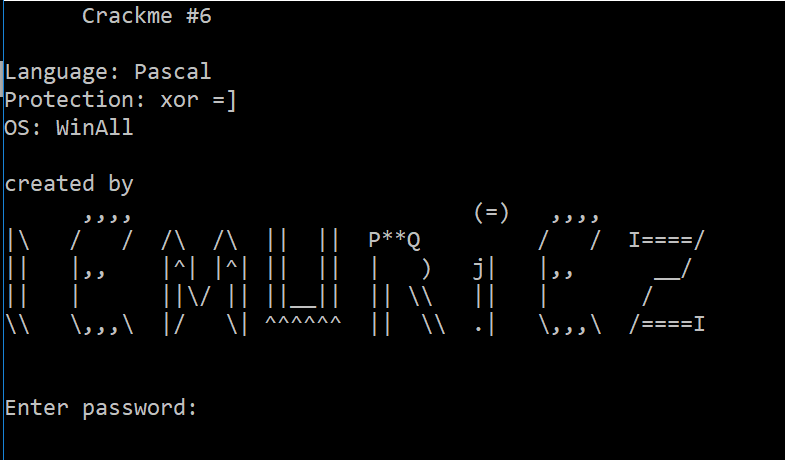
 <p class="caption"></p></div>
<!-- more-->

<h2 id="outline">Outline</h2>

<p>A typical flow for this kind of operation is as follows;</p>

<ul>
 <li>Learn stuff about the program - clues about how it was compiled, what libraries it is using and so forth</li>
 <li>Attempt to locate the code that checks the password</li>
 <li>For fun, simply patch it, skipping the protection to make sure everything is understood</li>
 <li>Identify the actual password checking algorithm and work out what it&rsquo;s doing</li>
 <li>With this new knowledge, construct and enter a correct password</li>
 <li>Write a program that can generate passwords</li></ul>

<p>For this post, the only tool used will be the excellent <a href="https://x64dbg.com/#start">x64dbg</a> which is an open-source windows debugger, a spiritual successor to the legendary <a href="http://www.ollydbg.de/">OllyDbg</a>.</p>

<h3 id="learn-stuff">Learn stuff</h3>

<p>Since the program already tells us it was written in Pascal, and this is a really simple crackme - there&rsquo;s not much to investigate, but lets look at it anyway. Loading the program in the debugger and viewing the Memory Map screen will show us how the operating system has laid out the program along with all the additional libraries it has loaded.</p>

<div class="figure">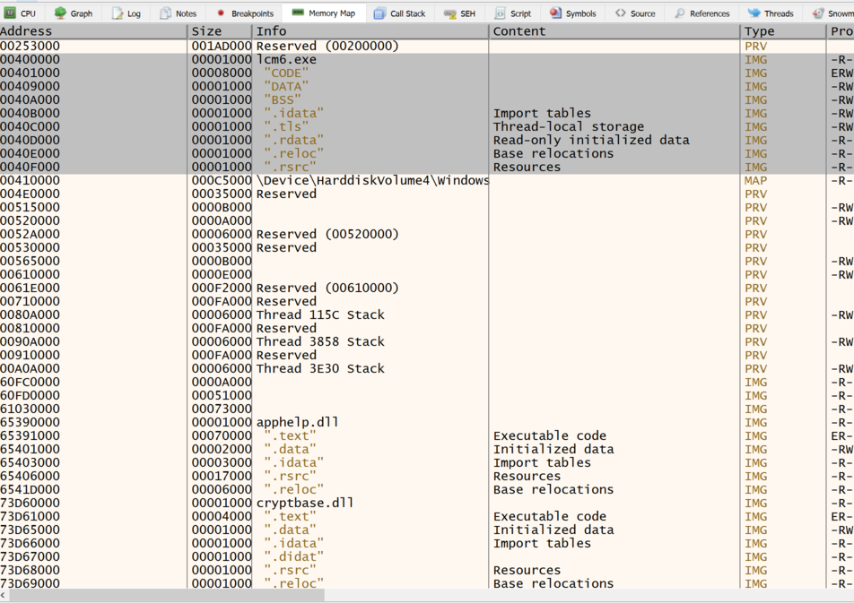
 <p class="caption"></p></div>

<p>Here we can see how the Pascal compiler has laid out the memory, the CODE section is where the actual progam is, and the other sections are for static global data, and other stuff.</p>

<p>Moving over to the symbols view, we can see what functions the program exports to the world, and all the exported function locations for all the linked libraries. Looking at the linked libraries can yield important information about what the program might do.</p>

<div class="figure">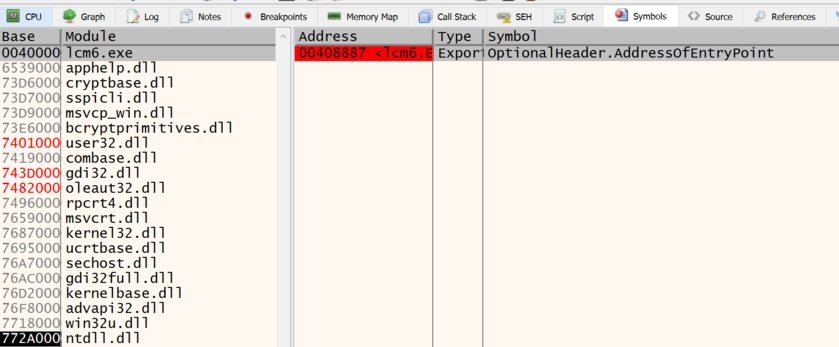
 <p class="caption"></p></div>

<p>We can see here the program exports just the one function, its main entry point, which the debugger has kindly put a breakpoint on for us already.</p>

<h3 id="locating-the-code">Locating the code</h3>

<p>Finding the code in question is the first challenge. You can&rsquo;t step through millions of lines of assembly code, which includes all the linked libraries and runtime systems from the programming language in question. It can often be hard to see the wood through the trees! What we need is some kind of hook to look for. Since this is a console program, and it writes a bunch of stuff to the console, we could try to find some of the strings it writes and then locate where they are referenced from to get us in the right area. To do this we can search, or maybe look at the DATA sections to see if we can spot any of the strings. Infact, it so happens x64dbg has a function that looks for referenced strings, so we can just run that.</p>

<div class="figure">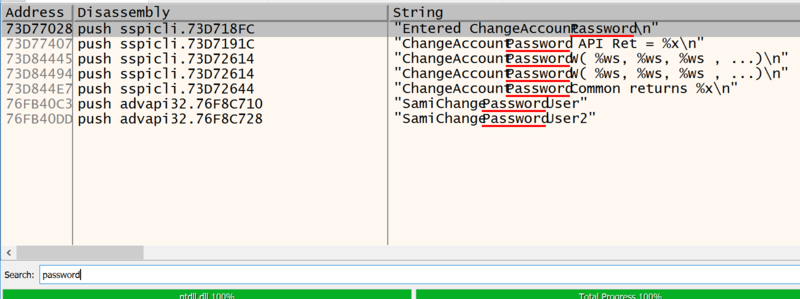
 <p class="caption"></p></div>

<p>Hmm. It did indeed find a ton of referenced strings, but the only ones with &ldquo;password&rdquo; in it are in some system library that is not relevant to our interests. Something is clearly amiss here!</p>

<p>Let&rsquo;s let the program run until it prompts the user to enter the password, then break into the debugger and try again</p>

<div class="figure">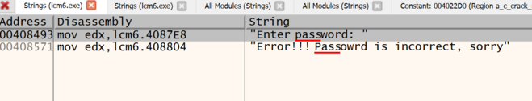
 <p class="caption"></p></div>

<p>Aha! This is what we were looking for. It would seem something is happening that causes the code to appear later. Let&rsquo;s look at the area of code it is pointing at</p>

<div class="figure">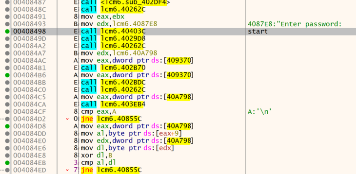
 <p class="caption"></p></div>

<p>Great! We can see here it is printing the text, then the following calls are probably getting input from the command line, then it is going to test the password somehow. Before we look at that though, let&rsquo;s investigate why the string references are not found when the program is started. Let&rsquo;s start the program again and look at the same address where this code lives. (0x00408498)</p>

<div class="figure">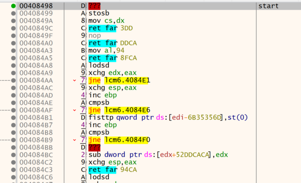
 <p class="caption"></p></div>

<p>This code is completely different! And, looking at it, it is nonsensical assembly code - rubbish or data. It would seem the program is somehow unpacked into this location at runtime. VERY INTERESTING!</p>

<p>Let&rsquo;s have a look at the actual entry point of the program to see what&rsquo;s going on. The entry point is at 0x00408887, which is somewhat higher in memory than the rubbish code area we have discovered.</p>

<div class="figure">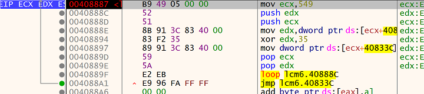
 <p class="caption"></p></div>

<p>Well well, what do we have here! This is a strange looking piece of code. The ecx register is used with the loop instruction here to create a loop that iterates 0x549 times, counting down. (when loop is executed, it decrements ecx and jumps if ecx is not zero). It then grabs the 32 bits present at memory location ecx + 0x40833C, XOR&rsquo;s it with 0x35, and then writes it back again to the same memory address! What exactly is this mysterious address? 549 + 40833C = 408885, which is the memory address of the bytes just above the entry point itself!</p>

<p>So, it would seem the program does a basic decryption of itself by XORing each 32bit address with 0x35, thus revealing the progam. Stepping through the loop a few times shows this is the case as you can see the real program magically appearing.</p>

<div class="figure">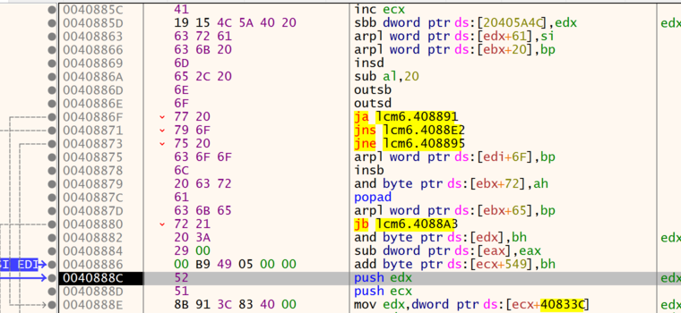
 <p class="caption"></p></div>

<p>MAGIC!</p>

<h2 id="patch-it">Patch it!</h2>

<p>Now let&rsquo;s look at how the password is checked, and see if we can bypass it.</p>

<div class="figure">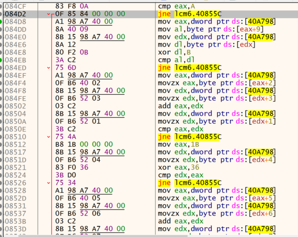
 <p class="caption"></p></div>

<p>This isn&rsquo;t all of the code, but it&rsquo;s most of it. You can see here it&rsquo;s doing a bunch of checks and then jumping to 40855c if it fails. Looking at that area, you can see it prints the failure message</p>

<div class="figure">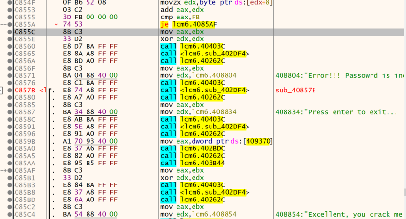
 <p class="caption"></p></div>

<p>You can also see here, the instruction above the jump target which is the final check, jumps to 4085AF where it prints the success message. Therefore, it should be a simple job to make the first check always jump to 4085AF. We could do this in multiple ways. For now, we&rsquo;ll simply change the first check to jump to the success location if the test fails.</p>

<div class="figure">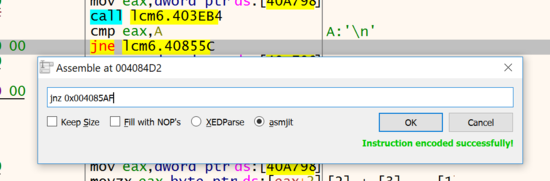
 <p class="caption"></p></div>

<p>Wiht a little digging, it turns out this first check is ensuring that the password is 0xA characters long. With the in-memory patch, we should be able to put in any other length string and skip the other checks.</p>

<div class="figure">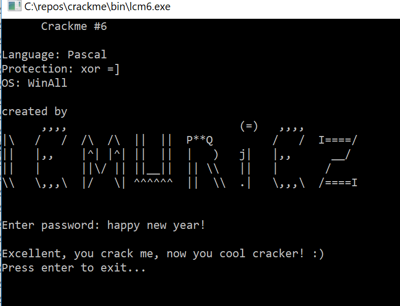
 <p class="caption"></p></div>

<p>However, we cannot write this change to the executable since it decrypts itself upon load. What we need to do instead is change the specific encrypted byte so that when it gets XOR&rsquo;d with 35, it produces the correct new value. Looking at the assembled change to the jump target, it is the value at address 4084D4 that changes from 84 to D7. Now, let&rsquo;s look at the same area of memory before it is decrypted</p>

<div class="figure">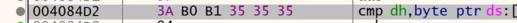
 <p class="caption"></p></div>

<p>Here we can see a value of B0, which when XOR&rsquo;d with 35 gives us 84, proving it is the correct value. Now we simply change that value to (D7 ^ 35) = E2 and save the binary. Now, when the program starts, it decrypts itself as normal except it now has our new jump target for the first check, thus bypassing the protection.</p>

<h2 id="the-algorithm">The algorithm</h2>

<p>Examining the assembly code and re-writing it in a higher level reveals something like this</p>

<div class="brush: d">
 <div class="highlight">
  <table class="highlighttable">
   <tbody>
    <tr>
     <td class="linenos">
      <div class="linenodiv">
       <pre><span class="normal">1</span>
<span class="normal">2</span>
<span class="normal">3</span>
<span class="normal">4</span>
<span class="normal">5</span>
<span class="normal">6</span>
<span class="normal">7</span>
<span class="normal">8</span></pre></div></td>
     <td class="code">
      <div>
       <pre><span></span><span class="w">  </span><span class="k">if</span><span class="p">(</span><span class="n">pwd</span><span class="p">.</span><span class="n">length</span><span class="w"> </span><span class="p">==</span><span class="w"> </span><span class="mi">10</span>
<span class="w">     </span><span class="p">&amp;&amp;</span><span class="w"> </span><span class="n">pwd</span><span class="p">[</span><span class="mi">9</span><span class="p">]</span><span class="w"> </span><span class="p">==</span><span class="w"> </span><span class="p">(</span><span class="n">pwd</span><span class="p">[</span><span class="mi">0</span><span class="p">]</span><span class="w"> </span><span class="p">^</span><span class="w"> </span><span class="mh">0xB</span><span class="p">)</span>
<span class="w">     </span><span class="p">&amp;&amp;</span><span class="w"> </span><span class="n">pwd</span><span class="p">[</span><span class="mi">2</span><span class="p">]</span><span class="w"> </span><span class="p">+</span><span class="w"> </span><span class="n">pwd</span><span class="p">[</span><span class="mi">3</span><span class="p">]</span><span class="w"> </span><span class="p">==</span><span class="w"> </span><span class="n">pwd</span><span class="p">[</span><span class="mi">1</span><span class="p">]</span>
<span class="w">     </span><span class="p">&amp;&amp;</span><span class="w"> </span><span class="n">pwd</span><span class="p">[</span><span class="mi">4</span><span class="p">]</span><span class="w"> </span><span class="p">==</span><span class="w"> </span><span class="p">(</span><span class="mh">0x1B</span><span class="w"> </span><span class="p">^</span><span class="w"> </span><span class="mh">0x36</span><span class="p">)</span>
<span class="w">     </span><span class="p">&amp;&amp;</span><span class="w"> </span><span class="n">pwd</span><span class="p">[</span><span class="mi">5</span><span class="p">]</span><span class="w"> </span><span class="p">+</span><span class="w"> </span><span class="n">pwd</span><span class="p">[</span><span class="mi">6</span><span class="p">]</span><span class="w"> </span><span class="p">+</span><span class="w"> </span><span class="n">pwd</span><span class="p">[</span><span class="mi">7</span><span class="p">]</span><span class="w"> </span><span class="p">+</span><span class="w"> </span><span class="n">pwd</span><span class="p">[</span><span class="mi">8</span><span class="p">]</span><span class="w"> </span><span class="p">==</span><span class="w"> </span><span class="mh">0xFB</span><span class="p">)</span>
<span class="w">    </span><span class="p">{</span>
<span class="w">      </span><span class="n">wl</span><span class="p">(</span><span class="s">"You cracked it!"</span><span class="p">);</span>
<span class="w">    </span><span class="p">}</span>
</pre></div></td></tr></tbody></table></div>

</div>

<p>We can see here a bunch of different checks on the string, where some values are connected with each other in various ways. Clearly, there are many valid passwords that would satisfy the check, one restriction is that since it is adding up the ascii characters directly, all the numbers must fall within the range that the user can input as ascii characters on the command line.</p>

<p>Let&rsquo;s write a simple rough&rsquo;n&rsquo;ready key generator that will create valid passwords, this time in F# (for no good reason)</p>

<div class="brush: fsharp">
 <div class="highlight">
  <table class="highlighttable">
   <tbody>
    <tr>
     <td class="linenos">
      <div class="linenodiv">
       <pre><span class="normal"> 1</span>
<span class="normal"> 2</span>
<span class="normal"> 3</span>
<span class="normal"> 4</span>
<span class="normal"> 5</span>
<span class="normal"> 6</span>
<span class="normal"> 7</span>
<span class="normal"> 8</span>
<span class="normal"> 9</span>
<span class="normal">10</span>
<span class="normal">11</span>
<span class="normal">12</span>
<span class="normal">13</span>
<span class="normal">14</span>
<span class="normal">15</span>
<span class="normal">16</span>
<span class="normal">17</span>
<span class="normal">18</span>
<span class="normal">19</span>
<span class="normal">20</span>
<span class="normal">21</span>
<span class="normal">22</span>
<span class="normal">23</span>
<span class="normal">24</span>
<span class="normal">25</span>
<span class="normal">26</span>
<span class="normal">27</span>
<span class="normal">28</span>
<span class="normal">29</span>
<span class="normal">30</span>
<span class="normal">31</span>
<span class="normal">32</span>
<span class="normal">33</span>
<span class="normal">34</span></pre></div></td>
     <td class="code">
      <div>
       <pre><span></span><span class="c1">// silly brute force keygen</span>
<span class="k">let</span><span class="w"> </span><span class="nv">keygen</span><span class="bp">()</span><span class="w"> </span><span class="o">=</span><span class="w"> </span>
<span class="w">    </span><span class="k">let</span><span class="w"> </span><span class="nv">getAscii</span><span class="w"> </span><span class="o">=</span><span class="w"> </span>
<span class="w">        </span><span class="k">let</span><span class="w"> </span><span class="nv">chaos</span><span class="w"> </span><span class="o">=</span><span class="w"> </span><span class="nn">System</span><span class="p">.</span><span class="n">Random</span><span class="bp">()</span>
<span class="w">        </span><span class="k">fun</span><span class="w"> </span><span class="bp">()</span><span class="w"> </span><span class="o">-&gt;</span><span class="w"> </span><span class="n">chaos</span><span class="o">.</span><span class="n">Next</span><span class="o">(</span><span class="mi">32</span><span class="o">,</span><span class="mi">126</span><span class="o">)</span>
<span class="w">    </span><span class="k">let</span><span class="w"> </span><span class="nv">inRange</span><span class="w"> </span><span class="n">n</span><span class="w"> </span><span class="o">=</span><span class="w"> </span><span class="n">n</span><span class="w"> </span><span class="o">&gt;=</span><span class="w"> </span><span class="mi">32</span><span class="w"> </span><span class="o">&amp;&amp;</span><span class="w"> </span><span class="n">n</span><span class="w"> </span><span class="o">&lt;=</span><span class="w"> </span><span class="mi">126</span>
<span class="w">    </span><span class="k">let</span><span class="w"> </span><span class="nv">pwd</span><span class="w"> </span><span class="o">=</span><span class="w"> </span><span class="o">[|</span><span class="k">for</span><span class="w"> </span><span class="n">x</span><span class="w"> </span><span class="k">in</span><span class="w"> </span><span class="mi">0</span><span class="w"> </span><span class="o">..</span><span class="w"> </span><span class="mi">9</span><span class="w"> </span><span class="o">-&gt;</span><span class="w"> </span><span class="sc">&#39;a&#39;</span><span class="o">|]</span>
<span class="w">    </span><span class="n">pwd</span><span class="o">.[</span><span class="mi">4</span><span class="o">]</span><span class="w"> </span><span class="o">&lt;-</span><span class="w"> </span><span class="kt">char</span><span class="w"> </span><span class="mi">0</span><span class="n">x2D</span><span class="w">  </span><span class="c1">// always x2D  &#39;-&#39;</span>
<span class="w">    </span><span class="k">let</span><span class="w"> </span><span class="nv">rec</span><span class="w"> </span><span class="n">aux1</span><span class="bp">()</span><span class="w"> </span><span class="o">=</span>
<span class="w">        </span><span class="k">let</span><span class="w"> </span><span class="nv">v</span><span class="w"> </span><span class="o">=</span><span class="w"> </span><span class="n">getAscii</span><span class="bp">()</span>
<span class="w">        </span><span class="k">let</span><span class="w"> </span><span class="nv">v</span><span class="w"> </span><span class="o">=</span><span class="w"> </span><span class="n">v</span><span class="w"> </span><span class="o">^^^</span><span class="w"> </span><span class="mi">0</span><span class="n">xB</span>
<span class="w">        </span><span class="k">if</span><span class="w"> </span><span class="n">inRange</span><span class="w"> </span><span class="n">v</span><span class="w"> </span><span class="k">then</span><span class="w"> </span><span class="n">v</span><span class="w"> </span><span class="k">else</span><span class="w"> </span><span class="n">aux1</span><span class="bp">()</span>
<span class="w">    </span><span class="n">pwd</span><span class="o">.[</span><span class="mi">0</span><span class="o">]</span><span class="w"> </span><span class="o">&lt;-</span><span class="w"> </span><span class="kt">char</span><span class="o">(</span><span class="n">aux1</span><span class="bp">()</span><span class="o">)</span>
<span class="w">    </span><span class="n">pwd</span><span class="o">.[</span><span class="mi">9</span><span class="o">]</span><span class="w"> </span><span class="o">&lt;-</span><span class="w"> </span><span class="kt">char</span><span class="w"> </span><span class="o">(</span><span class="n">int</span><span class="w"> </span><span class="n">pwd</span><span class="o">.[</span><span class="mi">0</span><span class="o">]</span><span class="w"> </span><span class="o">^^^</span><span class="w"> </span><span class="mi">0</span><span class="n">xB</span><span class="o">)</span>
<span class="w">    </span><span class="k">let</span><span class="w"> </span><span class="nv">rec</span><span class="w"> </span><span class="n">aux2</span><span class="bp">()</span><span class="w"> </span><span class="o">=</span>
<span class="w">        </span><span class="k">let</span><span class="w"> </span><span class="nv">v1</span><span class="o">,</span><span class="w"> </span><span class="n">v2</span><span class="w"> </span><span class="o">=</span><span class="w"> </span><span class="n">getAscii</span><span class="bp">()</span><span class="o">,</span><span class="w"> </span><span class="n">getAscii</span><span class="bp">()</span>
<span class="w">        </span><span class="k">if</span><span class="w"> </span><span class="n">inRange</span><span class="w"> </span><span class="o">(</span><span class="n">v1</span><span class="w"> </span><span class="o">+</span><span class="w"> </span><span class="n">v2</span><span class="o">)</span><span class="w"> </span><span class="k">then</span><span class="w"> </span><span class="n">v1</span><span class="o">,</span><span class="n">v2</span><span class="w"> </span><span class="k">else</span><span class="w"> </span><span class="n">aux2</span><span class="bp">()</span>
<span class="w">    </span><span class="k">let</span><span class="w"> </span><span class="nv">v1</span><span class="o">,</span><span class="w"> </span><span class="n">v2</span><span class="w"> </span><span class="o">=</span><span class="w"> </span><span class="n">aux2</span><span class="bp">()</span>
<span class="w">    </span><span class="n">pwd</span><span class="o">.[</span><span class="mi">2</span><span class="o">]</span><span class="w"> </span><span class="o">&lt;-</span><span class="w"> </span><span class="kt">char</span><span class="w"> </span><span class="n">v1</span>
<span class="w">    </span><span class="n">pwd</span><span class="o">.[</span><span class="mi">3</span><span class="o">]</span><span class="w"> </span><span class="o">&lt;-</span><span class="w"> </span><span class="kt">char</span><span class="w"> </span><span class="n">v2</span>
<span class="w">    </span><span class="n">pwd</span><span class="o">.[</span><span class="mi">1</span><span class="o">]</span><span class="w"> </span><span class="o">&lt;-</span><span class="w"> </span><span class="kt">char</span><span class="w"> </span><span class="o">(</span><span class="n">v1</span><span class="w"> </span><span class="o">+</span><span class="w"> </span><span class="n">v2</span><span class="o">)</span>
<span class="w">    </span>
<span class="w">    </span><span class="c1">//finally 4 in range values that add up to 0xFB (251)</span>
<span class="w">    </span><span class="c1">//each character must be at least 32!</span>
<span class="w">    </span><span class="k">let</span><span class="w"> </span><span class="nv">rec</span><span class="w"> </span><span class="n">aux3</span><span class="bp">()</span><span class="w"> </span><span class="o">=</span>
<span class="w">        </span><span class="k">let</span><span class="w"> </span><span class="nv">v1</span><span class="o">,</span><span class="n">v2</span><span class="o">,</span><span class="n">v3</span><span class="w"> </span><span class="o">=</span><span class="w"> </span><span class="n">getAscii</span><span class="bp">()</span><span class="o">,</span><span class="w"> </span><span class="n">getAscii</span><span class="bp">()</span><span class="o">,</span><span class="w"> </span><span class="n">getAscii</span><span class="bp">()</span>
<span class="w">        </span><span class="k">if</span><span class="w"> </span><span class="n">v1</span><span class="w"> </span><span class="o">+</span><span class="w"> </span><span class="n">v2</span><span class="w"> </span><span class="o">+</span><span class="w"> </span><span class="n">v3</span><span class="w"> </span><span class="o">&lt;</span><span class="w"> </span><span class="mi">0</span><span class="n">xFB</span><span class="w"> </span><span class="k">then</span><span class="w"> </span>
<span class="w">            </span><span class="n">pwd</span><span class="o">.[</span><span class="mi">5</span><span class="o">]</span><span class="w"> </span><span class="o">&lt;-</span><span class="w"> </span><span class="kt">char</span><span class="w"> </span><span class="n">v1</span>
<span class="w">            </span><span class="n">pwd</span><span class="o">.[</span><span class="mi">6</span><span class="o">]</span><span class="w"> </span><span class="o">&lt;-</span><span class="w"> </span><span class="kt">char</span><span class="w"> </span><span class="n">v2</span>
<span class="w">            </span><span class="n">pwd</span><span class="o">.[</span><span class="mi">7</span><span class="o">]</span><span class="w"> </span><span class="o">&lt;-</span><span class="w"> </span><span class="kt">char</span><span class="w"> </span><span class="n">v3</span>
<span class="w">            </span><span class="n">pwd</span><span class="o">.[</span><span class="mi">8</span><span class="o">]</span><span class="w"> </span><span class="o">&lt;-</span><span class="w"> </span><span class="kt">char</span><span class="w"> </span><span class="o">(</span><span class="mi">0</span><span class="n">xFB</span><span class="w"> </span><span class="o">-</span><span class="w"> </span><span class="n">v3</span><span class="w"> </span><span class="o">-</span><span class="w"> </span><span class="n">v2</span><span class="w"> </span><span class="o">-</span><span class="w"> </span><span class="n">v1</span><span class="o">)</span>
<span class="w">        </span><span class="k">else</span><span class="w"> </span><span class="n">aux3</span><span class="bp">()</span>
<span class="w">    </span><span class="n">aux3</span><span class="bp">()</span>
<span class="w">    </span><span class="nn">System</span><span class="p">.</span><span class="n">String</span><span class="o">(</span><span class="n">pwd</span><span class="o">)</span>
</pre></div></td></tr></tbody></table></div>

</div>

<p>This function generates lovely passwords such as &ldquo;RlF&amp;-sL&amp;Y&rdquo; that successfully pass the check.</p>

<p>I hope you enjoyed this little foray into the world of reverse engineering, and happy new year!</p>
  <footer>
    <ul class="pager">
    <li class="previous">
      <a href="/blog\2018\01\31\-fixed-memory-pool-design/">&larr; <em>&ldquo;Fixed&rdquo; Memory Pool Design</em></a>
    </li>
    <li class="next">
      <a href="/blog\2017\08\10\lexical-scoping-and-redefining-function-application/"><em>Lexical scoping and redefining function application</em> &rarr;</a>
    </li>
    </ul>

  </footer>
</article>
        </div>
      </div>
      <footer>
        <hr />

      </footer>
    </div>
    <!-- </body> JS -->
    <script type="text/javascript" src="//code.jquery.com/jquery.min.js"></script>
    <script type="text/javascript" src="/js/bootstrap.min.js"></script>
  </body>
</html>